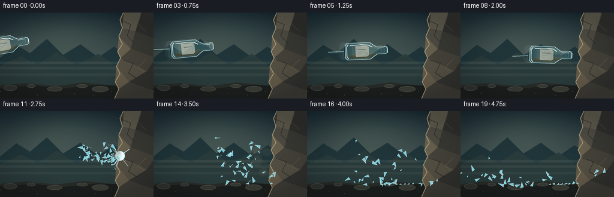
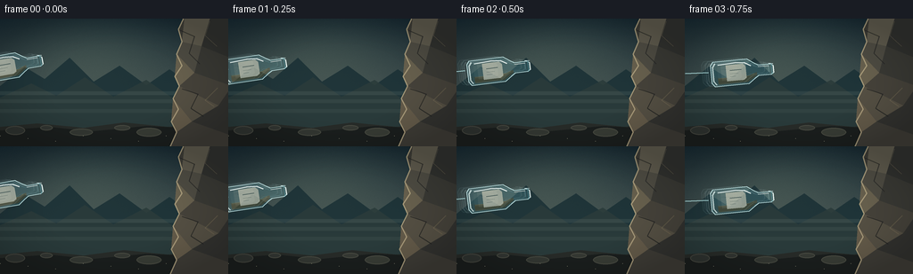
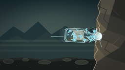
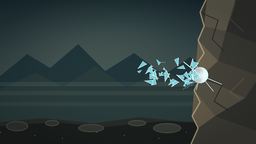
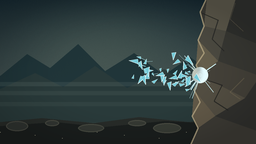
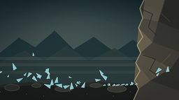

CODING AGENTS AS PIXEL WORLD MODELS
traex/GPT-5.6-Sol · phygen_133
点击播放 · 原生 RGB 像素
逐轮保存的候选
回放视频、检查图与代码变化。
每份候选均可单独播放。实际图片检查记录在下方工具轨迹中。
候选 01播放与检查图
点击播放 · 原生 RGB 像素


展开代码变化
--- 上一保存版本
+++ 本次保存版本
@@ -0,0 +1,291 @@
+from pathlib import Path
+import math
+import numpy as np
+from PIL import Image, ImageDraw, ImageFilter
+
+import artifact_io
+
+
+CASE_DIR = Path(__file__).resolve().parent
+W, H, N = 256, 144, 20
+S = 4 # supersampling for clean glass edges
+rng = np.random.default_rng(133)
+
+
+def pts(points):
+ return [(int(round(x * S)), int(round(y * S))) for x, y in points]
+
+
+def transform(points, cx, cy, angle):
+ c, s = math.cos(angle), math.sin(angle)
+ return [(cx + x * c - y * s, cy + x * s + y * c) for x, y in points]
+
+
+def line(draw, points, fill, width=1):
+ draw.line(pts(points), fill=fill, width=max(1, int(width * S)), joint="curve")
+
+
+def background(frame):
+ """Paint a cold, rugged outdoor setting with a massive rock on the right."""
+ h, w = H * S, W * S
+ yy = np.linspace(0, 1, h)[:, None, None]
+ top = np.array([17, 35, 45], dtype=float)[None, None, :]
+ bottom = np.array([86, 99, 94], dtype=float)[None, None, :]
+ arr = top * (1 - yy) + bottom * yy
+ arr = np.repeat(arr, w, axis=1)
+ # soft glow behind the projectile, while retaining dramatic contrast
+ xs = np.arange(w)[None, :]
+ ys = np.arange(h)[:, None]
+ glow = np.exp(-(((xs - 102 * S) / (105 * S)) ** 2 + ((ys - 42 * S) / (55 * S)) ** 2))
+ arr += glow[:, :, None] * np.array([25, 25, 17])[None, None, :]
+ fine_noise = rng.normal(0, 1.4, (h, w, 1))
+ arr = np.clip(arr + fine_noise, 0, 255).astype(np.uint8)
+ im = Image.fromarray(arr, "RGB")
+ d = ImageDraw.Draw(im, "RGBA")
+
+ # distant mountains and mist
+ d.polygon(pts([(0, 76), (27, 54), (50, 68), (78, 44), (105, 71),
+ (134, 53), (164, 75), (190, 57), (220, 78), (256, 58), (256, 122), (0, 122)]),
+ fill=(25, 47, 52, 215))
+ d.polygon(pts([(0, 89), (35, 73), (63, 87), (95, 66), (127, 88),
+ (164, 69), (194, 90), (228, 74), (256, 84), (256, 126), (0, 126)]),
+ fill=(42, 59, 58, 225))
+ for y, a in [(82, 24), (91, 18), (102, 14)]:
+ d.rectangle((0, y * S, W * S, (y + 4) * S), fill=(180, 196, 183, a))
+
+ # ground plane
+ d.polygon(pts([(0, 122), (42, 118), (94, 123), (139, 117), (189, 122),
+ (256, 112), (256, 144), (0, 144)]), fill=(39, 43, 40, 255))
+ d.polygon(pts([(0, 126), (55, 122), (103, 127), (164, 121), (225, 124),
+ (256, 119), (256, 144), (0, 144)]), fill=(26, 30, 29, 255))
+ # scattered stones
+ stones = [(17,126,11,5), (52,123,7,3), (91,128,13,4), (137,123,9,3), (167,128,14,5)]
+ for i, (x,y,rx,ry) in enumerate(stones):
+ d.ellipse((int((x-rx)*S), int((y-ry)*S), int((x+rx)*S), int((y+ry)*S)),
+ fill=(47+i*2, 51+i*2, 48+i, 255), outline=(82,83,73,160), width=S)
+
+ # giant jagged rock face -- visual target and immovable object
+ edge = [(207, -3), (200, 12), (204, 26), (198, 40), (204, 53),
+ (196, 65), (201, 76), (194, 90), (200, 102), (192, 116),
+ (198, 128), (190, 146)]
+ rock = edge + [(260, 146), (260, -3)]
+ d.polygon(pts(rock), fill=(59, 58, 52, 255))
+ # broad angular facets
+ facets = [
+ ([(207,-2),(236,-2),(226,31),(204,26)], (92,88,75,255)),
+ ([(236,-2),(260,-2),(260,45),(226,31)], (47,48,45,255)),
+ ([(204,26),(226,31),(218,61),(198,40)], (76,74,65,255)),
+ ([(226,31),(260,45),(260,76),(218,61)], (56,56,51,255)),
+ ([(198,40),(218,61),(201,76),(196,65)], (101,94,76,255)),
+ ([(218,61),(260,76),(245,98),(201,76)], (68,65,57,255)),
+ ([(201,76),(245,98),(215,116),(194,90)], (83,78,66,255)),
+ ([(245,98),(260,76),(260,132),(215,116)], (49,49,46,255)),
+ ([(194,90),(215,116),(198,128),(192,116)], (98,89,72,255)),
+ ([(215,116),(260,132),(260,146),(190,146),(198,128)], (61,59,53,255)),
+ ]
+ for poly, color in facets:
+ d.polygon(pts(poly), fill=color)
+ # chipped silhouette, rim light, and mineral cracks
+ line(d, edge, (174, 160, 126, 220), 1.4)
+ line(d, [(202,13),(218,20),(212,39),(224,51)], (34,35,34,190), 1.2)
+ line(d, [(204,79),(222,85),(214,101),(228,110)], (35,35,33,210), 1.1)
+ line(d, [(235,3),(230,19),(243,31)], (128,116,91,120), .7)
+ line(d, [(244,78),(230,92),(240,99)], (130,116,88,100), .8)
+
+ # vignette
+ vignette = Image.new("L", (w, h), 0)
+ va = np.zeros((h, w), np.uint8)
+ nx = (np.arange(w) - w/2) / (w/2)
+ ny = (np.arange(h) - h/2) / (h/2)
+ rr = ny[:,None]**2 + nx[None,:]**2
+ va[:] = np.clip((rr - .32) * 42, 0, 42).astype(np.uint8)
+ vignette = Image.fromarray(va, "L")
+ shade = Image.new("RGB", (w,h), (0,0,0))
+ im = Image.composite(shade, im, vignette)
+ return im.convert("RGBA")
+
+
+def bottle_layer(cx, cy, angle, alpha=255, cracked=False):
+ layer = Image.new("RGBA", (W*S, H*S), (0,0,0,0))
+ d = ImageDraw.Draw(layer, "RGBA")
+ outline = [(-33,-14), (5,-14), (12,-9), (17,-6), (31,-6),
+ (34,-4), (34,4), (31,6), (17,6), (12,9), (5,14),
+ (-33,14), (-36,10), (-36,-10)]
+ op = transform(outline, cx, cy, angle)
+ d.polygon(pts(op), fill=(119, 207, 220, int(38*alpha/255)))
+ line(d, op+[op[0]], (207, 244, 244, int(210*alpha/255)), 1.2)
+
+ # faint inner edge and thick glass heel
+ inner = transform([(-30,-11),(4,-11),(10,-7),(15,-4),(29,-4),
+ (29,4),(15,4),(10,7),(4,11),(-30,11)], cx,cy,angle)
+ line(d, inner, (96,176,191,int(110*alpha/255)), .65)
+ heel = transform([(-31,-12),(-34,-8),(-34,8),(-31,12)], cx,cy,angle)
+ line(d, heel, (229,251,248,int(190*alpha/255)), 1.65)
+
+ # warm residue at the lower side increases transparency readability
+ liquid = transform([(-29,5),(7,5),(11,3),(15,2),(15,5),(9,9),(4,12),(-29,12)], cx,cy,angle)
+ d.polygon(pts(liquid), fill=(145,119,58,int(60*alpha/255)))
+ line(d, transform([(-28,5),(7,5),(12,3)],cx,cy,angle), (226,201,118,int(85*alpha/255)), .6)
+
+ # paper label wraps around the center
+ label = transform([(-19,-9),(0,-9),(3,-6),(3,7),(0,9),(-19,9)],cx,cy,angle)
+ d.polygon(pts(label), fill=(216,220,201,int(152*alpha/255)), outline=(237,235,207,int(175*alpha/255)))
+ line(d, transform([(-15,-3),(-2,-3)],cx,cy,angle), (70,91,89,int(170*alpha/255)), 1)
+ line(d, transform([(-15,1),(-6,1)],cx,cy,angle), (104,119,108,int(150*alpha/255)), .7)
+ line(d, transform([(-15,4),(-9,4)],cx,cy,angle), (104,119,108,int(130*alpha/255)), .55)
+
+ # bright curved-looking specular streaks
+ line(d, transform([(-28,-10),(-9,-11),(2,-10),(9,-6)],cx,cy,angle),
+ (246,255,252,int(220*alpha/255)), 1.25)
+ line(d, transform([(17,-4),(29,-4)],cx,cy,angle), (251,255,251,int(230*alpha/255)), .9)
+ # bottle lip rings
+ line(d, transform([(29,-7),(34,-6)],cx,cy,angle), (224,251,250,int(200*alpha/255)), 1.2)
+ line(d, transform([(32,-6),(32,6)],cx,cy,angle), (92,169,181,int(160*alpha/255)), .8)
+ line(d, transform([(34,-4),(34,4)],cx,cy,angle), (242,255,252,int(235*alpha/255)), 1.25)
+
+ if cracked:
+ # hairline fractures race back from the point of contact
+ cracks = [
+ [(33,0),(25,-1),(19,-5),(11,-2),(4,-7)],
+ [(31,1),(24,4),(17,2),(10,8),(2,5)],
+ [(24,0),(17,-1),(12,4),(6,1),(-2,6)],
+ ]
+ for crack in cracks:
+ line(d, transform(crack,cx,cy,angle), (235,255,255,int(235*alpha/255)), .65)
+ return layer
+
+
+# Deterministic shard field. Sources span the original bottle, while velocity mostly
+# rebounds left from the solid wall. Each shard keeps a unique silhouette/spin.
+shards = []
+for i in range(38):
+ sx = rng.uniform(-32, 31)
+ sy = rng.uniform(-13, 13) * (0.75 + 0.25*rng.random())
+ speed = rng.uniform(4.5, 14.5)
+ vx = -speed * rng.uniform(.55, 1.0)
+ if i % 9 == 0:
+ vx = rng.uniform(0.8, 3.2)
+ vy = rng.uniform(-9.5, 7.0) - (2.0 if i % 3 == 0 else 0)
+ size = rng.uniform(1.8, 5.8)
+ spin = rng.uniform(-1.3, 1.3)
+ phase = rng.uniform(-math.pi, math.pi)
+ shards.append((sx,sy,vx,vy,size,spin,phase))
+
+
+def impact_effect(im, frame, impact=(199,75)):
+ """Draw shattering glass, the instantaneous flash, dust, and impact scars."""
+ dt = frame - 10
+ d = ImageDraw.Draw(im, "RGBA")
+ ix, iy = impact
+
+ # contact flash and radial glass streaks, strongest for two frames
+ if dt <= 2:
+ power = [255, 180, 80][max(0,dt)]
+ for j in range(22):
+ a = rng.uniform(0, math.tau)
+ # bias rays into the open space to the left
+ if j < 14:
+ a = rng.uniform(math.pi*.58, math.pi*1.42)
+ length = rng.uniform(7,24) * (1 + .25*dt)
+ x2, y2 = ix + math.cos(a)*length, iy + math.sin(a)*length
+ line(d, [(ix,iy),(x2,y2)], (211,250,255,int(power*.75)), rng.uniform(.35,.85))
+ for radius, a in [(8,power//3),(4,power//2),(2,power)]:
+ d.ellipse((int((ix-radius)*S),int((iy-radius)*S),int((ix+radius)*S),int((iy+radius)*S)),
+ fill=(230,252,255,a))
+
+ # expanding mineral dust circles (subtle, rock stays visibly solid)
+ if 0 <= dt <= 5:
+ dust = Image.new("RGBA", im.size, (0,0,0,0))
+ dd = ImageDraw.Draw(dust, "RGBA")
+ for j in range(9):
+ a = math.pi + rng.uniform(-1.2,1.2)
+ dist = (dt+1)*rng.uniform(2,6)
+ x = ix + math.cos(a)*dist
+ y = iy + math.sin(a)*dist + dt*1.0
+ r = (2.3 + dt*1.1)*rng.uniform(.6,1.35)
+ dd.ellipse((int((x-r)*S),int((y-r)*S),int((x+r)*S),int((y+r)*S)),
+ fill=(156,147,122,max(8,60-dt*9)))
+ dust = dust.filter(ImageFilter.GaussianBlur(2.0*S))
+ im.alpha_composite(dust)
+
+ # flying transparent pieces with gravity and a soft floor bounce
+ d = ImageDraw.Draw(im, "RGBA")
+ source_cx, source_cy = 166.5, 73.5
+ for i, (sx,sy,vx,vy,size,spin,phase) in enumerate(shards):
+ t = dt + 0.18
+ x = source_cx + sx + vx*t
+ y = source_cy + sy + vy*t + 1.35*t*t
+ # one simple inelastic bounce against the ground
+ floor = 124.5
+ if y > floor:
+ over = y-floor
+ y = floor-over*.28
+ x += vx*.16*over
+ if x < -8 or y < -8 or y > 141 or x > 252:
+ continue
+ ang = phase + spin*t
+ c,s = math.cos(ang),math.sin(ang)
+ tri = [(-size*.8,-size*.38),(size,0),(-size*.55,size*.52)]
+ poly = [(x+px*c-py*s, y+px*s+py*c) for px,py in tri]
+ # short motion streak communicates violent speed
+ if dt < 5 and abs(vx) > 8:
+ line(d, [(x-vx*.55,y-(vy+2.7*t)*.35),(x,y)], (174,232,239,55), .55)
+ d.polygon(pts(poly), fill=(117,202,216,80), outline=(224,254,252,205))
+ # bright edge on larger splinters
+ if size > 4.0:
+ line(d, [poly[0],poly[1]], (249,255,254,220), .55)
+
+ # tiny permanent chips collecting along the foot of the wall
+ if dt >= 5:
+ count = min(14, (dt-4)*3)
+ for i in range(count):
+ x = 149 + (i*13 % 46) + (i%3)*.7
+ y = 123.5 - (i%4)*.55
+ d.polygon(pts([(x-2,y),(x+2.2,y-.6),(x+.7,y-2.2)]),
+ fill=(125,191,197,90), outline=(214,247,244,150))
+
+
+def render_frame(frame):
+ im = background(frame)
+
+ # A thin luminous motion wake emphasizes that the bottle was hurled, not dropped.
+ d = ImageDraw.Draw(im, "RGBA")
+ if frame <= 9:
+ cx = 14 + 17.2*frame
+ cy = 53 + 2.25*frame
+ angle = math.radians(-10 + 1.45*frame)
+ # three translucent prior positions create directional motion blur
+ for lag, alpha in [(0.58,24),(0.33,42)]:
+ ghost = bottle_layer(cx-17.2*lag, cy-2.25*lag, angle-math.radians(1.45*lag), alpha)
+ im.alpha_composite(ghost)
+ line(d, [(max(0,cx-65),cy+2),(cx-39,cy+1)], (176,225,225,45), 1.0)
+ cracked = frame == 9
+ im.alpha_composite(bottle_layer(cx,cy,angle,255,cracked=cracked))
+ if frame == 9:
+ # first point of contact, before total failure
+ impact_effect(im, 10, impact=(201,74.5))
+ else:
+ impact_effect(im, frame, impact=(200,75))
+
+ # foreground flecks add depth but do not obscure the action
+ d = ImageDraw.Draw(im, "RGBA")
+ for k in range(7):
+ x = (31*k + frame*.35*(k%2)) % W
+ y = 132 + (k%3)*3
+ d.ellipse((int(x*S),int(y*S),int((x+.5)*S),int((y+.35)*S)), fill=(164,161,136,60))
+
+ im = im.convert("RGB").resize((W,H), Image.Resampling.LANCZOS)
+ return np.asarray(im, dtype=np.uint8)
+
+
+def main():
+ # Reset RNG so rerunning the script produces exactly the same video.
+ global rng
+ rng = np.random.default_rng(133)
+ frames = np.stack([render_frame(i) for i in range(N)], axis=0)
+ artifact_io.save(frames, CASE_DIR)
+ print(f"saved {frames.shape[0]} RGB frames at {W}x{H} to {CASE_DIR}")
+
+
+if __name__ == "__main__":
+ main()
可观测工具轨迹
实际执行的命令与返回图片。
命令 1exit 0
/bin/bash -lc "cat prompt.txt && printf '\\n--- GENERATION_RULES ---\\n' && cat GENERATION_RULES.md && printf '\\n--- TASK_SPEC ---\\n' && cat task_spec.json"
命令 2exit 0
/bin/bash -lc "find . -maxdepth 2 -type f -printf '%p\\n' | sort"
命令 3exit 0
/bin/bash -lc 'cat artifact_io.py'
命令 4exit 0
/bin/bash -lc 'python generate.py'
命令 5exit 0
/bin/bash -lc "python - <<'PY'
import numpy as np
from PIL import Image
from pathlib import Path
p=Path('.')
a=np.load('pixels.npz')['pixels']
print('pixels',a.shape,a.dtype,'frames',len(list((p/'frames').glob('*.png'))))
# Mean absolute frame deltas and exact dimensions/modes
ims=[np.array(Image.open(x)) for x in sorted((p/'frames').glob('*.png'))]
print('shape/mode',ims[0].shape,Image.open(p/'frames/00.png').mode)
print('MAD', [round(float(np.mean(np.abs(ims[i].astype(int)-ims[i-1].astype(int)))),2) for i in range(1,len(ims))])
print('artifacts',[(x.name,x.stat().st_size) for x in [p/'pixels.npz',p/'index.html',p/'inspection.png',p/'transition_check.png']])
PY"视觉工具实际返回图片 1

视觉工具实际返回图片 2

视觉工具实际返回图片 3

视觉工具实际返回图片 4

视觉工具实际返回图片 5

保存候选 1 份；完成命令 5 次；可验证图片返回 5 张。原始 API 响应与完整日志保留在本地。